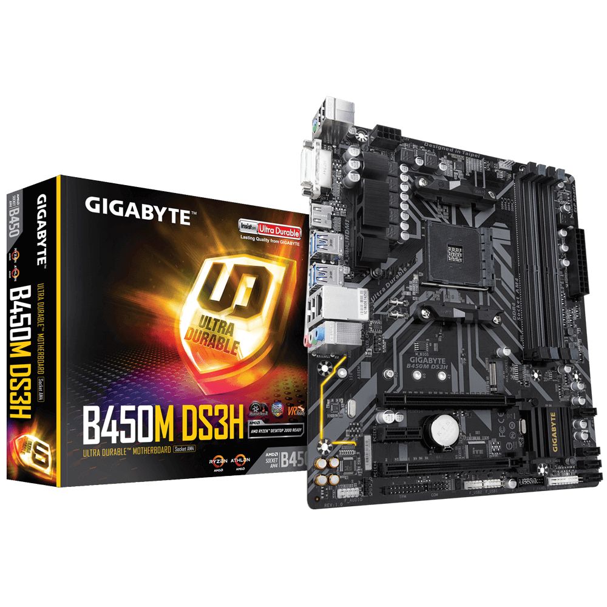
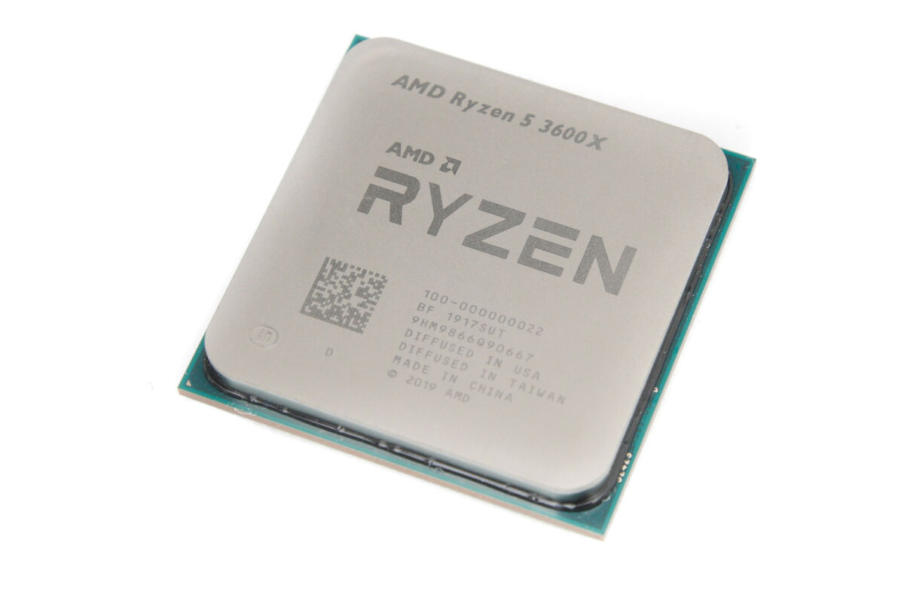

MY PC
-
MOTHERBOARD
Материнська плата AMD B450 Ultra Durable із Realtek ® GbE LAN із cFosSpeed, PCIe Gen3 x4 M.2, підтримка 7-кольорових світлодіодних стрічок RGB, резистор проти сірки, підтримка CEC 2019
-
Високоякісні аудіоконденсатори та захист від аудіо шумів зі світлодіодним підсвічуванням
-
Порти HDMI, DVI-D для кількох дисплеїв
-
RGB Fusion підтримує світлодіодні стрічки RGB у 7 кольорах
-
Realtek ® Гігабітна локальна мережа з програмним забезпеченням cFosSpeed Internet Accelerator
-
Smart Fan 5 має 5 датчиків температури та 2 гібридні вентиляторні роз’єми з функцією FAN STOP
-
CPU
AMD Ryzen 5 3600X, 6C/12T, 3.80-4.40 ГГц
Шестиядерний процесор AMD Ryzen 5 3600X OEM-відмінний варіант для комплектації ігрового комп'ютера. Перед вами-модель екстра-класу, можливості якої достатні для ефективного використання ігор, насичених високодеталізованою графікою. Базова частота пристрою - 3800 МГц. У турборежимі частота зростає до 4400 МГц. Максимально допустимий обсяг пам'яті дорівнює 128 ГБ.В ході експлуатації температура процесора може досягати 95 °C.
-
RUBIKS CUBE

Кубик Рубіка 5x5, також відомий як "Professor's Cube" (Кубик Професора), є більш складною версією класичного Кубика Рубіка. Як випливає з назви, цей кубик має розмірність 5×5×5, що робить його ще складнішим за Кубики Рубіка 3x3 і 4x4. Винайдений угорським інженером Удо Кремером, цей кубик призначений для досвідчених любителів головоломок.
Кубик Рубіка 5×5 є більш складною та цікавою головоломкою для шанувальників, які вже освоїли Кубики Рубіка 3x3 і 4x4, та пропонує нові виклики і можливості для вдосконалення навичок спідкубінгу.
-
RUBIKS CUBE

Мегамінкс (Megaminx) — це складна механічна головоломка, подібна до Кубика Рубіка, але у формі додекаедра, тобто багатогранника з 12 п'ятикутними гранями. Винайдена японським винахідником Хізо Окамо, Мегамінкс став популярним серед шанувальників головоломок через свою складність і захопливий процес збирання.
Мегамінкс є цікавою і складною головоломкою, яка пропонує нові виклики навіть для досвідчених шанувальників Кубика Рубіка, завдяки своїй унікальній формі та великій кількості можливих комбінацій.
-

PYRAMINX
Пірамідка Рубіка, або Pyraminx, — це механічна головоломка у формі тетраедра (чотиригранної піраміди), створена німецьким винахідником Уве Меффертом у 1970-х роках. Хоча вона має інший вигляд та механізм порівняно з класичним Кубиком Рубіка, завдання її складання подібне: потрібно повернути пірамідку так, щоб кожна з чотирьох граней складалася з трикутників одного кольору.
Пірамідка Рубіка є цікавою та захопливою головоломкою, яка пропонує нові виклики і можливості для любителів механічних головоломок, та є відмінним доповненням до класичного Кубика Рубіка.
-

SPEEDCUBING
Спідкубінг — це спортивна дисципліна, яка полягає в швидкісному збиранні головоломок типу Кубика Рубіка та його варіацій. Учасники змагань намагаються зібрати головоломку за найкоротший час, використовуючи спеціальні техніки та алгоритми.
Кубик Рубіка 3×3: Класична головоломка, з якої все почалося. Інші кубики: Кубики різних розмірів, включаючи 2×2, 4×4, 5×5, 6×6, 7×7. Інші форми: Pyraminx (пірамідка), Megaminx (додекаедр), Skewb, Square-1 та інші.